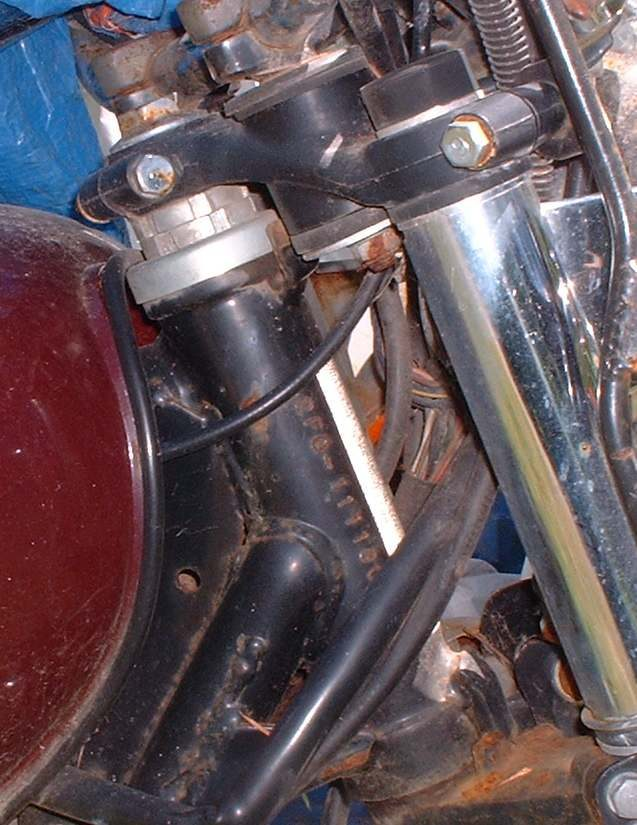
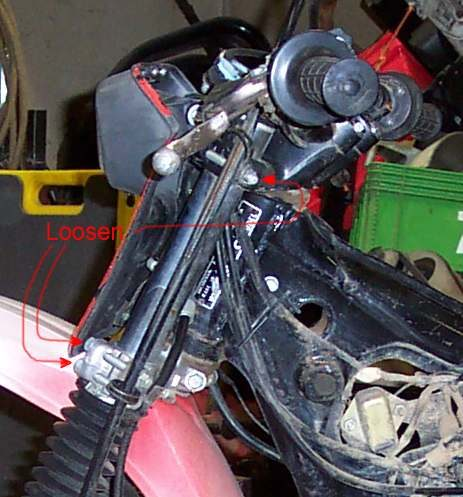

The steering stem is the vertical shaft that turns inside the frame's steering head. The yokes (top and bottom triple clamps) are fixed to it. They clamp the two fork tubes and carry the handlebar.
What it does
The yokes hold the forks parallel and let the whole front end turn on the steering bearings. The stem passes through the frame and is held by a nut that sets bearing preload. The pinch bolts on the yokes stop the tubes sliding. On some forks there is no top pinch bolt, and the tube is held by the same bolt that retains the spring.
Signs it is worn or failing
- Handlebar not straight when the wheel is straight: Handlebar is not straight.
- Cannot realign the bars to the wheel, even with the pinch bolts loose: the stem, yokes, forks or frame may be bent.
- Steering that is heavy, notchy or shakes: Steering feels heavy, Steering is notchy, Handlebars shake.
- Cracks around the stem or clamp after a crash: The bike has been dropped or crashed.
When to replace it
Replace a bent or cracked yoke or stem. Do not weld or straighten it.
What to match when buying
- Bike model and year. Yokes are specific to fork tube spacing and stem length.
- Stem nut and any lock washer or jam nut.
- Steering bearings and races fitted with the stem: Steering head bearings.
Fitting notes
- Loosen the pinch bolts only a little when realigning, so the forks can twist but not slide: Align the front wheel, forks and handlebar.
- Bearing adjustment uses the nut under the top yoke: Adjust or replace steering head bearings.
- Tighten pinch bolts and the stem nut to the values in your bike's manual.